Articles
Where do I start?
Without fail, people tell me they don't know where to start. they know they need to get started but, they are overwhelmed with the process of figuring it out. I will help you. Here are the top 5 things to do to get started decluttering.
Tips for unwanted books
TNSF TIP #1: What to do with unwanted books? I believe that books should be read, re-read and loved. it's a great idea to give them a new home. It seems these days that Libraries & Charities don't want them. See full article for our recommendations
Gifts that don't add clutter
Christmas is coming upon us & it's a time for gift giving. I personally love giving gifts that a person would love and wouldn't necessarily buy themselves. To that extent, I wanted to share some ideas of gifts that will not add to anyone's clutter but are still thoughtful.
T'was the night before Christmas
T'was the week after Christmas and all I could think "look at all this stuff!", it made my heart sink. But I knew it could be mended, as had been intended by the wise words of The Next Step Forward!
...We'll Figure it Out!

Testimonials
-
My husband and I had decided to move from our house to a condo, but, after 40 years of living in the same home – we had no idea where to begin! The Next Step Forward was able to declutter our home so we could put it on the market. Once sold, Clare helped us decide what to keep/donate/dispose/sell – and as a huge bonus, she sold items we did not want on maxsold. We made more money than we thought. Clare helped us pack, hired movers and managed our move! It made for a stress-free, enjoyable experience. I highly recommend using her services for all stages of your downsizing and moving. It was worth every penny! Thanks Clare!
-Betty M.
-
Clare’s business motto is “We’ll figure it out!”, and she does. She became my problem-solver, getting me packing materials well in advance so I could start my end of the packing, an electrician to remove a fixture, and a moving company which came in advance to see the set up in my condo’s garage with Clare there to make sure it all worked out. And then Clare and her associates came and packed up my precious china, crystal and art. They were a delight and worked very efficiently. I highly recommend their services.
-Lori R.
-
I had my condo decluttered by the terrific Next Step Forward team. Clare visited my home to see how much help I needed (a lot) and then two team members came to help me. They worked consistently for each of the three days I required and were very helpful when I had to make tough decisions about what should go. They packed up so many items quickly and efficiently and then removed them and delivered everything to suitable sites at the end of each day. The whole experience was professional, I would highly recommend TNSF!
-Steve K.
-
We used Clare for a declutter and pack and move. The five star service was amazing. Her team was able to assess, pack, declutter and arrange for moving of our condo contents while we were out of country. I provided pictures and details needed for which items were to stay and go and we had absolutely no issues. Her packing and labelling so that we know what is packed where when we return to the country or arrange for items to move out of country was seamless. Quote was accurate and speed was amazing
-M.May
-
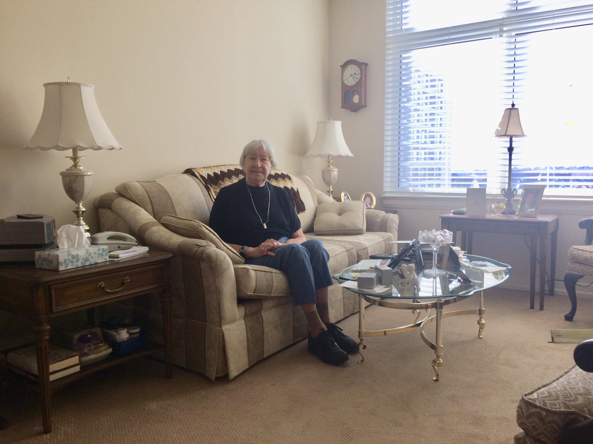
The thought of helping my elderly mother move in less than 30 days with Christmas only 3 weeks away seemed overwhelming! With Clare’s amazing help and calm compassionate ‘get things done’ approach, everything came together so very nicely. I was able to enjoy the Holidays and then we packed, moved, and set up her new home in 2 days at the end of the month. It was seamless and stress-free. I can’t thank you enough Clare, and my mom is very happy!
-Kay P.
-
I dreaded the thought of moving again and knew I couldn’t do it alone in such a short time frame. Hiring Clare and her team was a godsend. They answered my inquiries promptly and managed everything very efficiently –decluttering, packing, moving and setting up in my new home- but also with respect, humour and kindness...
-
...Clare was exceptionally hard working and also helped connect me with terrific contractors, such as electricians and painters, that I needed for the new house . Hiring The Next Step Forward was one of the best decisions I have ever made and I would hire them again in a heartbeat.
-Jill T.
-
The Next Step Forward managed my whole move! They were able to take the stress and pressure off me so all I had to worry about were my beautiful cats! They came and packed up my apartment (even taking away things to be donated); arranged for movers to come and managed the move...
-
...TNSF set me up so that all I had to do was come in and relax. Cathy & Clare unpacked my belongings and hung my art on the walls so my place felt like home, as soon as I walked in the door! The place looks awesome! They were terrific to work with! Thanks so much, Cathy & Clare of The Next Step Forward!
-Julia G.
-
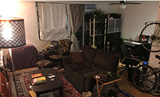
Before
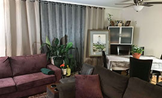After
My husband and I were finding our apartment crowded and non-functional. We had moved in 6 months earlier and many boxes were still unpacked. The clutter was getting to us. We called The Next Step Forward within 3 days Clare & Katie were able to: Gently coach me on what to purge, donate or organize into storage space/shelves thereby eliminating two thirds of the clutter, Set up our craft room/ work out room so that we had space and functionality...
-
...The Next Step Forward Reorganized all our closets in each room and even put up shelving to display some of our favourite items, they made functional design recommendations that once implemented completely improved the layout. We are thoroughly enjoying our reorganized space. It was worth every penny and we highly recommend this sweet, positive and energetic team of ladies!! Thanks Clare & Katie!
-Cynthia M.
-
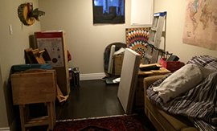
Before
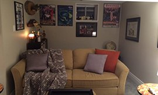After
The Next Step Forward took my basement full of junk and made it into a cosy, functional man cave! They used everything I already had and even put up my fish trophies...
-
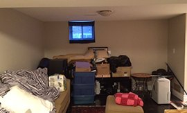
Before
After
I was impressed with The Next Step Forward’s creative ideas and attention to my requests. The man cave is ready for the Super Bowl! Thanks Clare and Cathy!
-Bob M.
-
I’d recommend working with Clare in a minute. She helped me prepare a home for an estate sale. It was a monumental task that required hard decisions as well as compassion. Clare helped me wade through over 80 years of family possessions full of memories with integrity and humour.
-Deb R.
-
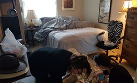
Before
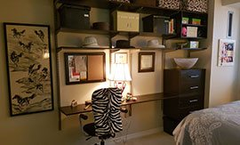After
My office/guest room was a catch-all and it was difficult to move around and use fully. The Next Step Forward transformed it into a functional, warm space where I am very happy to go to work…
-
Before
After
TNSF used my art and decor to the best advantage. It’s a pleasure to walk into this room now, and I know my guests feel the same way. Best money I ever spent!
-Christine D.
-
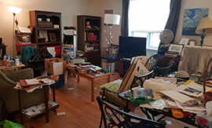
Before
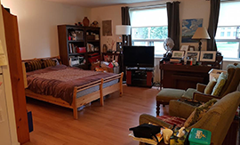After
When those horrid rains flooded my basement bedroom, I asked The Next Step Forward if they could help rearrange my upstairs level so I could make it through the reparations.
-LAD
-
Before
After
In a couple of days they managed to do everything I needed. Now I feel perfectly comfortable living in my ‘revised’ space, and they put the basement in order so the workers can do their thing. Thanks, TNSF, for your care and compassion. My nightmare isn’t a nightmare anymore!
-LAD
-
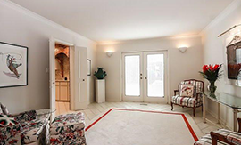
After
When I was in need of an organizational and decluttering crew to prepare a home I was about to list, I was thrilled to have found Clare and her team. They were always prompt, efficient, organized and tidy. They were also very sensitive to the needs of my seller, which was important as it can often be difficult to part with items that have been in your home for decades…
-
After
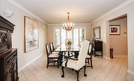After
...My seller and I were thrilled with every aspect of their services. I had complete confidence and peace of mind and look forward to working with Clare and her team again in the future. They are an absolute pleasure!
-Debi Stone
Forest Hill Real Estate
-
When I sold my condo and knew that work would keep me out of town before my move, I approached The Next Step Forward to see if they could help. Clare, Joan and their team took care of everything from start to finish: Selling what I didn’t need, Packing, Moving, and Storage. And the place was left spotless for the new owners. I recommend their services highly. Thanks!
-Asad M.